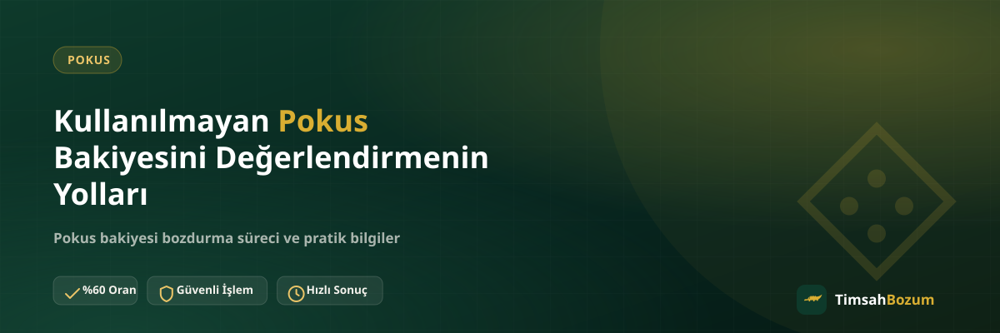

Bir oyunu bırakmak, farklı bir platforma geçmek ya da hediye olarak gelen bir bakiyeyi hiç kullanmamak gibi nedenlerle hesabında bekleyen bir Pokus bakiyesi olabilir. Bu bakiye kendiliğinden bir yere gitmez, sen bir adım atmadıkça olduğu gibi durur. Bu yazıda kullanılmayan Pokus bakiyeni değerlendirirken hangi seçeneklerin önünde olduğunu ve her birinde nelere dikkat etmen gerektiğini anlatıyoruz.
Kullanılmayan Pokus Bakiyesi Neden Birikir?
Bir oyunu artık oynamamak, kampanya veya hediye yoluyla gelen bir bonus bakiyeyi harcamayı unutmak ya da farklı bir oyuna geçmek en sık karşılaşılan nedenler arasında. Bakiye hesapta kaldığı sürece herhangi bir işleve sahip olmaz, sadece orada bekler. Aşağıdaki başlıklarda bu bakiyeyi değerlendirmenin yollarını ve her birinde dikkat etmen gereken noktaları sırayla ele alıyoruz.
Bakiyeyi Hesapta Bırakmak Bir Kayıp mı?
Kullanmadığın bir bakiye, herhangi bir getiri sağlamadan hesapta durur. Oyunu tekrar oynamayı planlamıyorsan, bu bakiyenin fiilen değerlendirilmediği bir durum ortaya çıkar. Bakiyeyi olduğu yerde bırakmak yerine, oyun içinde kullanmak veya nakde çevirmek gibi bir seçenek değerlendirmek daha pratik bir yaklaşım.
Bakiyeyi Oyun İçinde Kullanmaya Devam Edebilir misin?
Eğer ilgili oyunu hâlâ oynuyorsan, bakiyeni oyun içi satın alımlarda kullanmak en doğrudan seçenek. Ancak oyunu bırakmışsan veya bakiye farklı bir oyunda geçerli değilse, bu seçenek pratikte işlemez hale gelir. Bakiyenin hangi oyun veya platformda geçerli olduğunu net bilmiyorsan, bunu ilgili oyunun kendi hesap ayarlarından kontrol etmen en sağlıklısı.
Bakiyeyi Nakde Çevirmek Mantıklı bir Seçenek mi?
Oyunu bırakmış ya da bakiyeyi başka türlü değerlendiremeyecek durumdaysan, bakiyeyi bozdurmak elindeki değeri kullanılabilir hale getirmenin bir yolu. Pokus bozdurma hizmetinde bakiyenin tamamı ya da bir kısmı değerlendirilebiliyor, bu da hesapta hareketsiz duran bir tutarı elinde tutmak yerine nakde dönüştürmeni sağlıyor.
Kısmi Bozum Yaparak Bakiyeyi Değerlendirebilir misin?
Pokus bakiye tabanlı bir hizmet olduğu için bakiyenin tamamını bozdurmak zorunda değilsin. İstersen bir kısmını bozdurup kalan tutarı hesapta bırakabilirsin, ileride oyunu tekrar oynamayı düşünüyorsan bu esneklik işine yarar. Bu, kod tabanlı hizmetlerden (Razer Gold, iTunes gibi) farklı bir özellik; kod tabanlı hizmetlerde kodun tam değeri tek seferde değerlendirilir, kısmi bozum yapılmaz.
Bakiyeyi Bozdurmadan Önce Hangi Bilgiler Gerekiyor?
İşleme başlamadan önce güncel bakiyeni gösteren okunaklı bir ekran görüntüsü hazırlaman yeterli. Görüntüde tutarın net görünmesi, bakiyenin doğrulanmasını hızlandırır. Bozdurmak istediğin tutarı da ilk mesajında belirtmen, karşılıklı soru-cevabı azaltan basit bir adım.
Bozdurma İşlemi Ne Kadar Güvenli?
Güvenilir bir bozum sürecinde üyelik, form doldurma veya kimlik belgesi istenmez, hesabına erişim verilmesi de gerekmez. Tek ihtiyacın, bakiyeni gösteren bir ekran görüntüsü ve resmi WhatsApp hattımız (+90 543 887 21 71) üzerinden iletişim. Farklı bir numara veya platform üzerinden gelen bir talebe bilgi paylaşmadan önce, bunun resmi hat olup olmadığını doğrulaman en doğrusu.
İşlem Ne Kadar Sürer?
Süreç; bakiye bilginin eksiksiz paylaşılması ve oranın teyit edilmesiyle ilerler. Kesin bir süre vermek yerine, işlem öncesi güncel bilgiyi WhatsApp'tan teyit etmek en doğru yaklaşım. Bilgini net ve eksiksiz paylaşman, sürecin ilk turdan itibaren hızlı ilerlemesini sağlar.
Bakiyeyi Değerlendirirken En Sık Yapılan Hata Nedir?
En sık karşılaşılan hata, güncel olmayan bir ekran görüntüsü paylaşmak ya da oranı teyit etmeden "bozdurmak istiyorum" deyip beklemeye geçmek. Bu hatalar işlemi iptal etmez ama gecikmeye yol açar. Bakiyeyi paylaşmadan önce ekranı bir kez yenilemen ve güncel oranı sorman, bu gecikmeyi baştan önler.
Hediye veya Kampanya Yoluyla Gelen Bakiye de Değerlendirilir mi?
Bir arkadaşından hediye olarak gelen ya da kampanya kapsamında hesabına tanımlanan Pokus bakiyesi de aynı şekilde değerlendirilebilir. Bakiyenin kaynağı bozum işlemini etkilemez, önemli olan bakiyenin güncel ve hesapta görünür olması. Bu tür bakiyeler de tıpkı kendi yüklediğin bir bakiye gibi tamamen ya da kısmen bozdurulabilir.
Birden Fazla Bakiyeyi Tek Seferde Bildirebilir misin?
Elinde farklı zamanlarda birikmiş birkaç Pokus bakiyesi varsa, bunları tek tek değil, tek mesajda toplu şekilde bildirmek süreci hızlandırır. Aynı şekilde hem bir Pokus bakiyen hem de örneğin bir Paycell bakiyen varsa, ikisini de aynı mesajda belirtmen tek tek yazmaktan daha hızlı sonuç verir. Bu, hem senin hem karşındaki hattın zamanını korur.
Değerlendirme Sonrası Ödeme Nasıl Alınır?
Bakiyeni bozdurmaya karar verip oranı teyit ettikten sonra ödeme yöntemi WhatsApp üzerinden görüşülerek belirlenir. Bu aşamada senden ek bir belge veya form istenmez; ödemenin nasıl ve ne zaman yapılacağı konuşulan yöntemle netleşir. İşlem tamamlandıktan sonra ekran görüntülerini bir süre saklaman, ileride bir soru çıkması durumunda referans olması açısından faydalı olur.
Bakiyeyi Değerlendirmeden Önce Karar Vermen Gereken Nedir?
İşleme başlamadan önce asıl karar vermen gereken şey, bakiyeyi hâlâ oyun içinde kullanıp kullanmayacağın. Oyunu tekrar oynamayı düşünmüyorsan, bakiyeyi hesapta bekletmek yerine değerlendirmek daha mantıklı bir seçim. Bu kararı verdikten sonra tutarı ve varsa ekran görüntüsünü hazırlaman, sürecin geri kalanını basitleştirir.
Hesabında bekleyen Pokus bakiyeni değerlendirmeye hazırsan, güncel oranı öğrenmek için WhatsApp hattımıza yazarak işlemini başlatabilirsin.
İlgili Yazılar
- Pokus Bakiyesi Nedir, Nasıl Oluşur?
- Pokus Bakiyesi Bozdurmadan Önce Kontrol Etmen Gerekenler
- Pokus ile Mobil Ödeme Arasındaki Fark Nedir?